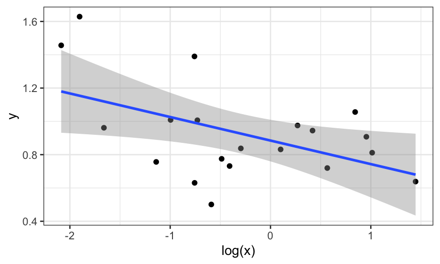

Stat 470/670 Lecture 26: EDA and the Problem of Multiple Comparisons
Julia Fukuyama
November 27, 2018
Presentation notes
You can use either your computer or mine to present.
If you want to use mine, email me a pdf of your slides before class and I'll have them ready to go.
If you want to use your computer, make sure you have the right equipment to hook your computer up to the projector.
We will have exactly enough time for all the presentations on Thursday, but we'll have to start exactly on time and the presentations can't run long.
EDA and Multiple Comparisons
Optional reading: Gelman and Loken
For our last lecture, we will talk for the first time about \(p\)-values.
The standard multiple comparison problem
Suppose a researcher is interested in whether married and unmarried men have different opinions on gun laws.
He asks married and unmarried men whether they are in favor of stricter gun laws.
Overall he didn't see a difference between the two groups, but he also looked at his data state-by-state and gets the following results (only the 15 states with the largest absolute differences are shown):
## State Unmarried Married Difference
## 36 NJ 0.48 0.42 -0.06
## 37 CO 0.50 0.57 0.07
## 38 CT 0.57 0.50 -0.07
## 39 OR 0.53 0.60 0.07
## 40 AK 0.49 0.42 -0.07
## 41 MD 0.51 0.59 0.08
## 42 VA 0.48 0.57 0.09
## 43 SC 0.44 0.53 0.09
## 44 TX 0.42 0.51 0.09
## 45 IL 0.56 0.47 -0.09
## 46 OH 0.51 0.61 0.10
## 47 WV 0.42 0.52 0.10
## 48 ND 0.41 0.59 0.18
## 49 IN 0.39 0.58 0.19
## 50 MI 0.38 0.59 0.21
When he tests for whether the state-by-state differences are significant, he sees that three are: North Dakota, Indiana, and Michigan, and in each case married men are more likely to favor stricter gun laws.
What are some possible explanations for these results?
In this example, we might worry that there is actually no difference in any of the states, and that we saw the three small \(p\)-values simply by chance.
We can do a little simulation to see what would happen if the true effect was zero in all of the states: In that case, for each state we have a \(.05\) chance of getting a \(p\)-value less than \(.05\) (the definition of a \(p\)-value).
set.seed(2)
# simulate 50 hypothesis tests at .05
rejections = rbinom(50, 1, prob = .05)
# a value of 1 means we rejected the null, a value of 0 means we failed to reject
# here all of the nulls were true, but we rejected 4 of them
rejections
## [1] 0 0 0 0 0 0 0 0 0 0 0 0 0 0 0 0 1 0 0 0 0 0 0 0 0 0 0 0 1 0 0 0 0 0 0
## [36] 0 0 0 0 0 1 0 0 0 0 0 1 0 0 0
We can repeat the example above many times to see how many times we expect to reject three or more hypotheses out of 50, and we see that even when all of the nulls are true, we would expect to reject at least three null hypotheses almost half of the time
n_rejections = rep(NA, 5000)
for(i in 1:5000) {
rejections = rbinom(50, 1, prob = .05)
n_rejections[i] = sum(rejections)
}
table(n_rejections)
## n_rejections
## 0 1 2 3 4 5 6 7 8 9 10 11
## 377 979 1340 1102 695 326 119 45 13 1 2 1
mean(n_rejections >= 3)
## [1] 0.4608
Testing the global null hypothesis
The hypothesis that all of the individual null hypotheses are true is referred to as the global null: if \(H_{0i}\) refers to the \(i\)th null hypotheses, the global null is
\[
H_0 = \cap_{i=1}^n H_{0i},
\] the intersection of all the individual null hypotheses.
Suppose we are interested in testing hypotheses at level \(\alpha\) (we reject with a \(p\)-values less than \(\alpha\))
One of the simplest methods for testing the global null hypothesis is called Bonferroni's Method.
The procedure is as follows:
Test each of the \(n\) individual hypotheses \(H_{0i}\), \(i = 1,\ldots, n\) at level \(\alpha / n\).
Reject the global null, \(H_0\), whenever we reject one of the \(H_{0i}\)'s. If \(p_i\) is the \(p\)-value corresponding to hypothesis \(i\), this amounts to rejecting the global null \(H_0\) whenever \(\text{min} \; p_i \le \alpha / n\).
Notes
Bonferroni's method has the correct size: if the global null is true, and we test at level \(\alpha\), we will reject the global null with a rate at most \(\alpha\).
The more tests we run, the smaller the minimum \(p\)-value has to be for us to reject the global null. If we're "fishing" and looking at a lot of possibilities, we need a lot more evidence than if we had decided in advance what question we wanted to ask.
There are other ways of testing the global null, and there is a lot of research into multiple testing. Even so, Bonferroni's method is commonly used as a quick and easy way of correcting for multiple tests.
Multiple comparisons and EDA
Let's set up a toy example.
Suppose we are interested in whether two variables, \(x\) and \(y\), are related to each other.
In reality they are not, but we are equipped with the full power of our EDA course and we are able to try out different transformations of the variables and different methods to check for the relationship.
## full disclosure: I started the seed at 0 and went up
## until I got a result with a p-value < .05
set.seed(4)
library(broom)
library(MASS)
x = rgamma(20, 1, 1)
y = rgamma(20, 10, 10)
We start off by just plotting \(x\) vs. \(y\):
ggplot(data.frame(x, y), aes(x = x, y = y))+ geom_point() + stat_smooth(method = "lm")
It doesn't look like there's much there. However, \(x\) looks like it has heavy tails, and so maybe we should transform it to reduce the skewness.
Let's plot \(y\) vs \(\text{log}(x)\):
ggplot(data.frame(x, y), aes(x = log(x), y = y))+ geom_point() + stat_smooth(method = "lm")

That's better, but maybe we should also use robust regression because we think there might be outliers in \(y\).
We plot the robust smooth as well:
ggplot(data.frame(x, y), aes(x = log(x), y = y))+ geom_point() + stat_smooth(method = "rlm")
In the end, we fit three models. Maybe we changed our minds and decided that robust regression wasn't necessary and that we think the linear model with \(y\) predicted by \(\text{log}(x)\) is the best.
We then want a \(p\)-value for our collaborators or to publish, and we are happy to see that the coefficient is significant:
tidy(lm(y ~ log(x)))
## # A tibble: 2 x 5
## term estimate std.error statistic p.value
## <chr> <dbl> <dbl> <dbl> <dbl>
## 1 (Intercept) 0.885 0.0595 14.9 1.51e-11
## 2 log(x) -0.141 0.0583 -2.43 2.60e- 2
What is the problem here?
Let's look at the \(p\)-values for the other two models that we rejected:
tidy(lm(y ~ x))
## # A tibble: 2 x 5
## term estimate std.error statistic p.value
## <chr> <dbl> <dbl> <dbl> <dbl>
## 1 (Intercept) 1.03 0.0901 11.4 0.00000000116
## 2 x -0.0859 0.0577 -1.49 0.154
tidy(rlm(y ~ log(x)))
## # A tibble: 2 x 4
## term estimate std.error statistic
## <chr> <dbl> <dbl> <dbl>
## 1 (Intercept) 0.880 0.0645 13.6
## 2 log(x) -0.111 0.0631 -1.76
## the corresponding p-value for rlm:
pnorm(abs(tidy(rlm(y ~ log(x)))[2, "statistic", drop = TRUE]), lower.tail = FALSE) * 2
## [1] 0.07833073
Neither of the other two models would have given us a significant result at the \(.05\) level: the \(p\)-values were \(.15\) and \(.08\).
The problem is that if the other models had looked better to us, we might have used the \(p\)-values from them instead of from the model we chose, and so we are implicitly or unconsciously performing multiple tests.
To see why this invalidates our \(p\)-values, suppose we ungenerously describe the procedure we used to come up with our model as follows:
Fit a linear model of \(y\) described by \(x\). If that has a significant \(p\)-value, stop and report that \(p\)-value. Otherwise...
Fit a linear model of \(y\) described by \(\text{log}(x)\). If that has a significant \(p\)-value, stop and report that \(p\)-value. Otherwise...
Fit a robust linear model of \(y\) described by \(\text{log}(x)\). Report that \(p\)-value because you're out of time.
What fraction of the time will you reject the null hypothesis?
We can see what happens by simulation:
pvals = rep(NA, 5000)
for(i in 1:5000) {
x = rgamma(20, 1, 1)
y = rgamma(20, 10, 10)
out.lm = lm(y ~ x)
pval = tidy(out.lm)[2,"p.value", drop=TRUE]
if(pval > .05) {
out.lm = lm(y ~ log(x))
pval = tidy(out.lm)[2,"p.value", drop=TRUE]
}
if(pval > .05) {
out.lm = rlm(y ~ log(x))
pval = pnorm(-abs(tidy(out.lm)[2, "statistic", drop=TRUE])) * 2
}
pvals[i] = pval
}
We reject at the \(.05\) level about twice as much as we should, and so reporting the nominal \(p\)-value would be misleading here.
mean(pvals <= .05)
## [1] 0.103
ggplot(data.frame(pval = pvals)) +
stat_ecdf(aes(x = pval)) +
scale_x_continuous(breaks = seq(0, 1, by = .05)) +
scale_y_continuous(breaks = seq(0, 1, by = .05)) +
theme(axis.text.x = element_text(angle = 90, vjust = .5))
In our simulation, we made modeling decisions explicitly based on \(p\)-values. You can invalidate your \(p\)-values even if you make the decisions without actually looking at the \(p\)-values, it's just easier to simulate this way.
Note 1
- Notice that this isn't quite as bad as running three independent tests: in that case we would expect about \(14\)% of the \(p\)-values to be less than \(.05\), but here we only get about \(10\)%.
## .95^3 is the probability that you fail to reject
## three null hypotheses at the .05 level, and so the
## following is the probability that you reject at
## least one of three null hypotheses at the .05 level
1 - .95^3
## [1] 0.142625
Note 2
We only looked at three models/potential tests in the simulation here, but the problem can be much, much worse. We have:
Multiple ways to transform each of the predictors,
Multiple ways to transform the response,
Choices about excluding outliers,
Choices about how to code variables,
Multiple models to fit,
Tunable parameters in the models we use (e.g. the span parameter in LOESS),
Decisions about whether and which interactions to fit
This can lead to an enormous number of potential tests: Suppose you have two predictors, four ways of transforming predictors, three potential outliers, two coding choices, and five potential models. This gives \[
4 \times 4 \times 4 \times 2^3 \times 2 \times 5 = 5120
\] distinct combinations of analysis choices.
In principle, we could count up all the possible tests and do a Bonferroni correction, but in practice the Bonferroni cutoff will be too strict for you to ever reject.
Note 3
Exploration doesn't always invalidate your \(p\)-values, only if you do it while looking at the relationship you want to test.
You can do anything to the predictors before you see the response and still get valid \(p\)-values.
If you make decisions about transformations of the response without seeing how it relates to the predictors, you can still have valid \(p\)-values.
Let's try another simulation to illustrate the point above.
Suppose we have the same setup as in the first simulation, but now we decide whether or not to transform \(x\) and \(y\) based on how skewed they are instead of of based on the significance of the relationship.
Our procedure:
If \(x\) has a skewness larger than \(1.5\), use a log transformation of \(x\) in the model.
If \(y\) has a skewness larger than \(1\), use a log transformation of \(y\) in the model.
Fit a linear model and report a \(p\)-value.
pvals2 = rep(NA, 5000)
for(i in 1:5000){
x = rgamma(20, 1, 1)
y = rgamma(20, 10, 10)
if(skewness(x) > 1.5)
x = log(x)
if(skewness(y) > 1)
y = log(y)
out.lm = lm(y ~ x)
pvals2[i] = tidy(out.lm)[2,"p.value", drop = TRUE]
}
Now we see that the \(p\)-values are distributed the way they should be. In this case, looking at the variables and transforming them didn't invalidate our \(p\)-values.
mean(pvals2 <= .05)
## [1] 0.0536
ggplot(data.frame(pval = pvals2)) +
stat_ecdf(aes(x = pval)) +
scale_x_continuous(breaks = seq(0, 1, by = .05)) +
scale_y_continuous(breaks = seq(0, 1, by = .05)) +
theme(axis.text.x = element_text(angle = 90, vjust = .5))
Remedies
- Report the results as exploratory. Describe all the choices made and everything you looked at so that the reader can make his or her own judgment about whether the results are real or due to chance.
- New data: Perform exploratory analysis, identify some hypotheses that you would like to test (how you will transform the predictors and responses, how you will code variables, what model you will use, what tunable parameters you will use, etc.). Test those hypotheses on a new dataset that you've never seen before.
- Split the data into exploration and validation sets before you begin. Do the exploratory analysis on the exploration set, identify specific hypotheses to test, and test them on the validation set.